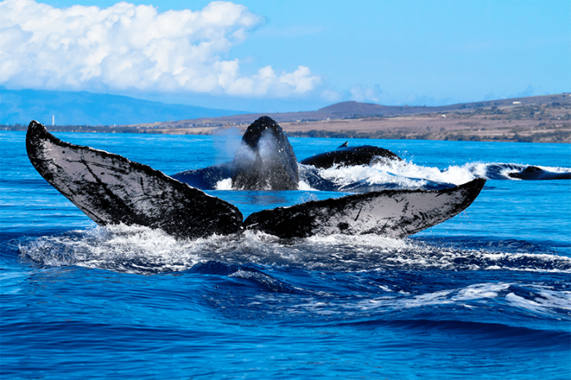

One of Aaron Eger’s favorite places to go is a lush forest near his home in Sydney, Australia. He describes the world enclosed beneath the canopy—often as tall as 200 feet—as “enchanting,” with “an amazing diversity of life bustling around at your fingertips.” The forest is right outside a major metropolis, but few know of this ecosystem that supports more than 700 species because … it’s a giant kelp forest. Composed of undulating seaweeds, which serve as structural and biological supports, carbon sinks, foraging grounds, and nurseries, this vanishing biodiversity hotspot is invisible to most of its human neighbors.
“You can crawl through the forest, you can swim through the forest, you can just lay at the bottom and stare up at the surface and watch the sun play off the seaweeds,” says Eger, a marine ecologist and program director of the Kelp Forest Alliance, a global environmental organization that aims to protect kelp forests. He’s been speaking to me at length about his work in kelp research and conservation, but this is the first time I’ve heard an edge of reverence in his voice on our video call.
The thought of an old growth forest being felled can tug at one’s emotions, but few of us have likely ever given much thought to vast canopies of seaweed, despite the fact that the benefits they provide to both natural and human communities are on par with the most productive terrestrial forests on Earth. Just as tree forests grow on approximately a third of the Earth’s landmass, so do kelp forests cover a third of the world’s coastal shallows. Suddenly, as I listen to Eger speak, I’m tempted to seek one out.
“The Western mindset has been groomed to think of the waters as an alien force, a dark void.”
He is used to such reactions. “I try to encourage other people to go [to kelp forests], change that perception, get it a bit more commonplace,” Eger says.
Kelp forests are one of many threatened or endangered marine ecosystems that suffer not only from a visibility problem, but also from a relationship problem. The Earth is about 71 percent water, and 40 percent of the world’s population lives within 60 miles of a coast. But to many of us—especially in the Global North, which dominates decision-making that impacts the planet the most—ocean spaces remain abstract, difficult to define, and hard to access, both physically and emotionally.
“At a deeper cultural level, the Western mindset has been groomed to think of the waters as an alien force, a dark void, a theater of chaos,” writes the social theorist Jeremy Rifkin in his book Planet Aqua: Rethinking Our Home in the Universe. The frequently made—if not entirely accurate—point that we know more about the surface of the moon than the bottom of our own oceans, isn’t helping the cause.
Some scientists are now arguing that the widespread cultural notion of the ocean as a vast and mysterious entity has become a serious hindrance to applied marine research that seeks to protect the oceans and mitigate climate change. As the stakes of marine management climb ever higher in a time of oceanic warming, pollution, resource extraction, and sea level rise, cutting-edge research and emerging technologies in the marine sciences—drones, autonomous vehicles, 3-D mapping, nano satellite imagery that monitors ocean color—will not be enough on their own to restore balance to the seas. It is our relationship to the ocean that must shift. Now a growing community of scientists who study marine spatial planning are asking: Does the ocean have a place problem?
“How do you create a place?” asks Christopher Lepczyk, an Auburn University ecologist. “It’s an old question in geography and ecology.”
In the marine sciences, it’s a relatively new one.
A place is a space with meaning—an incarnation of the experiences and aspirations of people,” wrote the authors of a paper published in npj Ocean Sustainability last year. An interdisciplinary collaboration among a dozen scientists from the United Kingdom, France, Australia, and the United States that includes conservationists, Indigenous scientists, marine biologists, and geographers, the research called for a new, place-based path forward in seascape ecology.
“Place is particularly overlooked at sea, where depth and fluidity alter human relationships to the Earth’s surface, each other, and thus placemaking,” they wrote. They argued that marine spatial planning—a process developed by UNESCO that seeks to manage marine ecosystems to balance human demands for ocean space with environmental protection—must include not only the latest models and technologies, but socio-cultural context, place names, historical relationships, traditional ecological knowledge, symbolism, and storytelling.
In terrestrial landscapes, the complex relationships and understandings that give rise to a sense of place have long been a core principle in applied ecology. By the late 20th century, “we had a lot of conservation projects that were just failing,” says Lepczyk, who is a coauthor of the paper, even though “the science may well have been known.” He gives the example of the northern spotted owl, a species that was in drastic decline in the 1980s due to logging in the U.S. Pacific Northwest. Though the facts of its dwindling population and the causes were known, the attempts to protect it erupted into a years-long battle among the logging industry, the U.S. government, and conservation groups. This controversy helped terrestrial conservation practices to shift toward strategies that considered not only environmental concerns, but diverse human uses of and relationships to landscapes.

MONUMENTAL ECOSYSTEM: The Northeast Canyons and Seamounts Marine National Monument teams with life that is out of human view—but submersibles have captured photos of a number of different lifeforms, including this bamboo coral. Credit: NOAA Office of Ocean Exploration and Research / AP
Also bolstering this shift was the philosophy of a land ethic, articulated in the mid 20th century by the philosopher and environmentalist Aldo Leopold, who argued that caring for people meant caring for the land, and vice versa. A sense of place—the ways in which people are connected to the land not only physically, but emotionally, culturally, economically, and often spiritually—has now been widely incorporated into terrestrial conservation work, bringing with it a sense of moral obligation to the work of protecting interconnected human and natural communities.
Though efforts are imperfect and there is still plenty of room to grow beyond Western frameworks of thought, Lepczyk says that terrestrial ecology has nonetheless come to take the idea of place seriously.
But a shared, place-based understanding of seascapes is a largely uncharted territory in Western science.
It is not a question of simply transposing place-based ecological approaches from land to sea. The ocean operates under different laws, both natural and human. Ecological boundaries and the ranges of species are often harder to define; ownership is limited when it exists at all; laws and regulations are notoriously difficult to enforce. Volumetrically speaking, much of the ocean remains undiscovered and unknown to science.
One of the issues is that, to most humans, “once you’re really away from any landmass at all, you’re just floating out in the middle of nowhere,” says Lepczyk. “That’s a grand challenge. It all looks homogenous.” And scientists, too, have “often treated the open ocean as this big [mass], kind of like the atmosphere.”
But many of the challenges facing the ocean are not abstract or homogenous—they are concrete, specific, and increasingly dire. Addressing them requires not just rigorous interdisciplinary science, but also support and buy-in from governments, industry, and communities.
Take the Northeast Canyons and Seamounts Marine National Monument, which is located just 130 miles out to sea, southeast of Cape Cod, and covers an area about the size of Connecticut. Were this seascape on land, it would rival the majesty of the Rocky Mountains. Canyons plunge thousands of feet deep, their walls decorated with sponges, corals, and skittering crabs. Seamounts (underwater mountains) rise 8,000 feet from the seafloor, where pristine, ancient forests of deep-sea corals spread their crooked branches. Endangered sperm whales—capable of diving 10,000 feet below the surface—hunt their food in these mysterious depths. It’s a wonderland of astonishingly intact marine biodiversity, home to more than 1,000 species.
Much of the ocean remains undiscovered and unknown to science.
But not only is the monument utterly out of sight, it is physically out of reach. Unlike Eger’s underwater kelp forests, a person cannot strap on a scuba suit and visit. No human being has made direct contact with this sprawling reserve. Our images of this seascape have come from remotely operated vehicles and robots.
“Ecological gems or not, it isn’t easy to advocate for the protection of a place that’s entirely out of the general public’s view,” states an article about the monument from the National Resources Defense Council. Commercial fishing and the potential for oil and gas drilling posed known and direct threats to this fragile ecosystem. Still, the effort that it took to protect it—it was officially declared a National Monument by President Obama in 2016—was, no pun intended, monumental. An abbreviated list of those who contributed to its current status as a Marine Protected Area includes, according to the NRDC: “The Conservation Law Foundation, Pew Charitable Trusts, the Mystic and New England aquariums, Earthjustice … elected officials, business leaders, scientists, faith-based groups, fishermen, marine mammal research groups, whale watch operators, dive groups, and more than 300,000 members of the public.”
Though 8 percent of the world’s oceans are under some form of Marine Protected Area designation, only 3 percent are considered fully protected (compared to approximately 17 percent of terrestrial lands and inland waters). This is despite the fact that the deep ocean contains 95 percent of the water on Earth that serves as habitat for animal life. “This realm, largely out of sight and poorly explored” writes Lisa Levin for Oceanography, “remains one of planet Earth’s final frontiers.”
Ocean-as-place is not a new concept to coastal and seafaring Indigenous peoples the world over. Native Hawaiians have, for centuries, connected to the landscape and the natural resources of their archipelago through a land management system called ahupua’a, which entails a holistic understanding of the continuity of a watershed as it flows down from the highest mountain peaks, to the shoreline, and out into the ocean. It also extends the sense of place, without boundary, from land to sea—interconnected sites of ecological, cultural, ancestral, and spiritual meaning.
Every year between November and April, more than half of the North Pacific’s humpback whale population arrives at the Hawaiian Islands Humpback Whale National Marine Sanctuary to breed and calve. The whale sanctuary is managed by the National Oceanographic and Atmospheric Association (NOAA), in collaboration with the state of Hawaii and with local groups, including members of the Native Hawaiian community.

WHALE TRAILS: Large marine animals, such as whales, tend to travel ancient paths that span entire oceans and have defined destinations. These whales were spotted at the Hawaiian Islands Humpback Whale National Marine Sanctuary. Photo by lego 19861111 / Shutterstock.
The Kumulipo, the Native Hawaiian creation chant, describes a shared, sacred genealogy as it depicts how all of the beings who inhabit these land-and-seascapes came to be. First came the coral polyp. Later, the whale. And later still, the people. Whales are called koholā in the Hawaiian language and are understood to be ancient beings that embody ancestral relationships to both family and to the ocean.
Thus the presence of whales in the sea imbues a marine space with cultural and spiritual meaning, such that it becomes not just space, but place. And this place-based understanding of the habitat of these marine giants is informing both practical ways and the wider scientific framework through which NOAA and its Hawaiian collaborators manage the sanctuary. The strategy, according to NOAA, “follows this traditional wisdom that recognizes what happens on the land (mauka) impacts the ocean (makai).”
Elsewhere, others are working to bring, if not a spiritual, then a deep cultural resonance to marine spaces.
When Eger was beginning his serious study of seagrasses and kelp, he found the research fascinating but became frustrated by a trend he noticed in the field: No matter how solid the published science, “the world was functionally the same after the paper as it was before the paper.” During his Ph.D. candidacy, he decided to cast a wider net; the science of kelp, yes, but also the culture of kelp.
Out of this work emerged the Kelp Forest Alliance, a global network of people and organizations working not only to protect and restore kelp forests, but also to rebuild their cultural importance. One goal of the Alliance is to tell the story of kelp forests not as isolated ecosystems, but as sites of ancient and ongoing placemaking, where human interests and relationships interact with a unique ecological space. “It’s not just the scientists,” says Eger, “it’s not just the marine park managers, but there’s all sorts of ways for people to get interested.” From a film on Indigenous marine gardening to music videos to sharing the emerging theory that kelp was instrumental in human migrations through the Americas, the Alliance is constructing a narrative that brings, in its words, “wonder” and emotional investment to protecting kelp.
These sorts of efforts to engage a wider range of people in what a place could mean in the ocean recalls the early applications of the land ethic in the mid to late 20th century as it sought to expand the idea of community to include terrestrial spaces. As the npj Ocean Sustainability paper states: “It is ultimately the role of place in developing an ocean ethic that upholds a symbiotic relationship between humans and the ocean.”
The ocean challenges and often undoes what, on land, had a solid foundation. In science, this has been a source of both frustration and opportunity.
“The Ocean is not empty,” write the authors of the npj Ocean Sustainability paper. “It is dynamic, heterogeneous, highly interconnected, and can be understood by people in many ways. Place matters in the sea, and the way we view the ocean determines how we manage it.”
But to manage it effectively, we must be willing to see it differently—and find our place within it. 
Lead photo: Daniel Poloha / Shutterstock